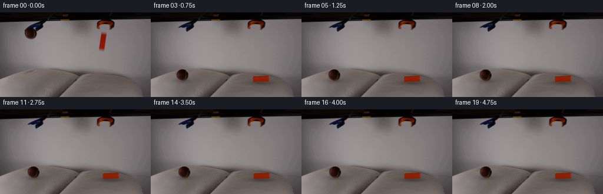
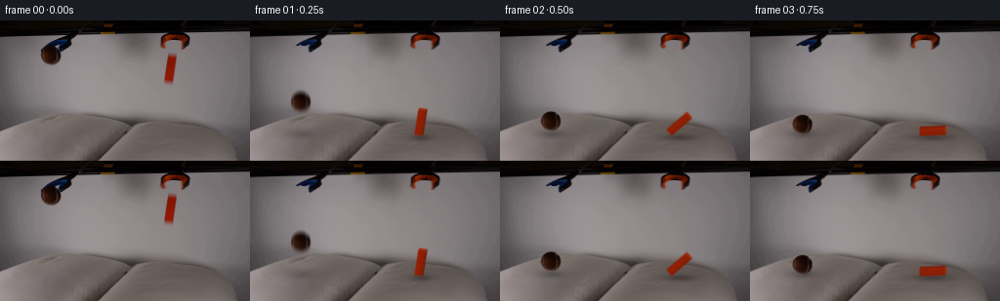

候选 01 · 2026-11-08T18:58:08.168644+00:00 · 点开播放与检查图
inspection.png

transition_check.png

代码变化
--- 上一保存版本
+++ 本次保存版本
@@ -0,0 +1,250 @@
+from pathlib import Path
+import math
+import numpy as np
+from PIL import Image, ImageDraw, ImageFilter
+import cv2
+from scipy.ndimage import gaussian_filter, map_coordinates
+import artifact_io
+
+ROOT=Path(__file__).resolve().parent
+W,H=256,144
+S=4
+Y,X=np.mgrid[:H,:W]
+ORIG=np.asarray(Image.open(ROOT/'first_frame.png').convert('RGB'))
+
+
+def clean_plate():
+ im=ORIG.astype(float)
+ # Locally reconstruct the softly lit, untextured wall behind the ball.
+ valid=(X>=31)&(X<=85)&(Y>=18)&(Y<=62)
+ valid &= ~((X>38)&(X<78)&(Y<48))
+ x=(X-52)/30; y=(Y-35)/30
+ A=np.stack([np.ones_like(x),x,y,x*x,x*y,y*y],axis=-1)
+ coef=np.linalg.lstsq(A[valid],im[valid],rcond=None)[0]
+ wall=A@coef
+ m=Image.new('L',(W*S,H*S));d=ImageDraw.Draw(m)
+ poly=[(46.6,25.3),(54.7,25.3),(57.7,27),(60.4,30.8),(62.7,33.1),(63.5,37.8),(62.1,41.7),(58.7,44.8),(54,46.7),(48,46.4),(43.1,42.9),(40.8,38),(40.5,31.2),(42.1,29),(43.3,28)]
+ d.polygon([(round(a*S),round(b*S)) for a,b in poly],fill=255)
+ mask=np.asarray(m.resize((W,H),Image.Resampling.LANCZOS))/255.
+ # Retain the blue gripping fingers above the released sphere.
+ blue=(im[:,:,2]-im[:,:,0]>12)&(Y<32.5)&(X>43)
+ mask[blue]=0
+ mask=gaussian_filter(mask,.28)
+ clean=im*(1-mask[:,:,None])+wall*mask[:,:,None]
+ # Tiny occluded tip is a continuation of the remaining blue jaw.
+ repair=((X-42.2)**2/1.5**2+(Y-30.3)**2/1.4**2)<1
+ clean[repair]=wall[repair]
+ m=np.zeros((H,W),np.uint8)
+ cv2.fillConvexPoly(m,np.array([[170,31],[183,33],[180,69],[165,67]],np.int32),255)
+ inp=cv2.inpaint(ORIG,m,5,cv2.INPAINT_TELEA).astype(float)
+ clean[m>0]=inp[m>0]
+ return np.clip(clean,0,255)
+
+BASE=clean_plate()
+
+# A texture patch from the actual brown tennis ball, completed only where the
+# gripper occluded the uppermost part. The original image provides the lighting,
+# fuzzy skin, and the two pale curved seams.
+def make_ball_texture():
+ n=112
+ yy,xx=np.mgrid[:n,:n]
+ u=(xx+.5-n/2)/(n/2)*11.8
+ v=(yy+.5-n/2)/(n/2)*11.8
+ r=np.sqrt((u/10.05)**2+(v/10.0)**2)
+ a=np.clip((1-r)*10.05+0.55,0,1)
+ sx=u+51.85;sy=v+35.3
+ color=np.stack([map_coordinates(ORIG[:,:,c].astype(float),[sy,sx],order=1,mode='nearest') for c in range(3)],-1)
+ bg=np.stack([map_coordinates(BASE[:,:,c],[sy,sx],order=1,mode='nearest') for c in range(3)],-1)
+ # Decontaminate the antialiased silhouette from the old wall.
+ color=(color-bg*(1-a[:,:,None]))/np.maximum(a[:,:,None],.18)
+ z=np.sqrt(np.clip(1-(u/10.05)**2-(v/10.)**2,0,1))
+ light=np.clip(.37-.40*u/10+.16*v/10+.38*z, .23,1)
+ fill=np.stack([47*light+2,23*light-2,12*light-2],-1)
+ blue=np.clip((color[:,:,2]-color[:,:,0]+2)/12,0,1)
+ # Any fragments of the blue claw at the crown are not part of the ball.
+ top=np.clip((-v-7.6)/1.4,0,1)
+ fix=np.maximum(blue,top)
+ color=color*(1-fix[:,:,None])+fill*fix[:,:,None]
+ color=np.clip(color,0,200)
+ return color,a
+
+BALL,BALL_A=make_ball_texture()
+
+# High resolution planar coordinates used for all analytic shading.
+YS,XS=np.mgrid[:H*S,:W*S].astype(float)
+XS=(XS+.5)/S;YS=(YS+.5)/S
+BASE_H=cv2.resize(BASE,(W*S,H*S),interpolation=cv2.INTER_CUBIC)
+
+
+def state(t):
+ """Continuous gravity-driven fall, a yielding landing, and damped settling."""
+ # Both releases occur at the initial instant. The orange block is already
+ # clear of its jaws in the supplied exposure, hence its initial velocity.
+ g=1550.
+ ball_impact=math.sqrt(2*(105.5-35.3)/g)
+ if t<ball_impact:
+ bx=51.85+1.2*t;by=35.3+.5*g*t*t
+ ball_compress=0.;roll=.015*t;bd=0.
+ else:
+ q=t-ball_impact
+ # Very low restitution for a soft cushion: 3 px of give followed by a
+ # small lift, then a short gentle roll down the curved fabric.
+ if q<.080:
+ by=105.5+3.0*math.sin(math.pi*q/.16)
+ bd=3.0*math.sin(math.pi*q/.16)
+ elif q<.220:
+ k=(q-.080)/.140
+ by=108.5-5.1*math.sin(math.pi*k/2)
+ bd=3*(1-k)**2
+ elif q<.400:
+ k=(q-.220)/.180
+ by=103.4+3.0*k*k
+ bd=.5*k*k
+ else:
+ by=106.4+.40*math.exp(-8*(q-.4))*math.sin(25*(q-.4))
+ bd=.8
+ drift=4.7*(1-math.exp(-max(0,q-.22)/.56))
+ bx=52.21+drift
+ by+=.19*drift
+ ball_compress=.035*math.exp(-q*8)*max(0,math.sin(q*23))
+ roll=drift/10
+ # Plane contact is the point at which the bottom edge reaches the cushion.
+ # Initial bottom edge has screen height 62, while the pad is at y=118.
+ v0=62.; b0=62.0
+ hit=(-v0+math.sqrt(v0*v0+2*g*(117.4-b0)))/g
+ theta0=math.radians(9)
+ if t<hit:
+ theta=theta0+.035*t
+ px=172.0+.8*t
+ py=b0+v0*t+.5*g*t*t
+ od=0
+ else:
+ q=t-hit
+ # Inelastic contact, with the tall block tipping onto its broad side.
+ k=min(max((q-.018)/.49,0),1)
+ ease=k*k*(3-2*k)
+ theta=theta0+(math.radians(87)-theta0)*ease
+ if q>.508:
+ theta+=math.radians(3)*math.exp(-8*(q-.508))*math.sin(22*(q-.508))
+ px=172.18+2.5*(1-math.exp(-q/.6))
+ py=117.4+2.0*math.exp(-q*9)*math.sin(q*23)+1.15*(1-math.exp(-q*6))
+ od=1.0+1.7*math.exp(-q*10)*max(0,math.sin(q*22))
+ return (bx,by,roll,ball_compress,bd),(px,py,theta,od)
+
+
+def shade_pillow(img,ball,block,t):
+ bx,by,roll,compress,bd=ball
+ px,py,theta,od=block
+ # Local fabric indentation: displace existing cloth details, rather than
+ # substituting a synthetic pillow. The skyline and seams remain fixed.
+ yy=YS.copy();xx=XS.copy()
+ for cx,cy,amount,rx,ry in [(bx,116.8,bd,17,7),(px+9*math.sin(theta),119.5,od,21,7)]:
+ d=np.exp(-((XS-cx)/rx)**2/2-((YS-cy)/ry)**2/2)
+ edge=np.clip((YS-104)/7,0,1)
+ yy-=amount*d*edge
+ xx+=(XS-cx)*amount*.015*d*edge
+ moved=cv2.remap(img.astype(np.float32),(xx*S-.5).astype(np.float32),(yy*S-.5).astype(np.float32),cv2.INTER_LINEAR,borderMode=cv2.BORDER_REPLICATE)
+ # Broad ambient shadows tighten as the objects approach the fabric.
+ ball_height=max(0,106.4-by)
+ ballshadow=np.exp(-((XS-bx-1)/(9.6+ball_height*.060))**2/2-((YS-116.5)/(2.7+ball_height*.032))**2/2)
+ opacity=.26*math.exp(-ball_height/55)
+ shade=1-opacity*ballshadow
+ centerx=px+12.6*math.sin(theta)
+ blockheight=max(0,117.4-py)
+ # An elongated shadow lies underneath the block once it has tipped flat.
+ rx=5.4+8.5*math.sin(theta)
+ blockshadow=np.exp(-((XS-centerx-1)/rx)**2/2-((YS-120.2)/(2.5+blockheight*.025))**2/2)
+ shade*=1-.27*math.exp(-blockheight/40)*blockshadow
+ for cx,cy,amount,rx in [(bx,116.7,bd,13),(centerx,119.6,od,17)]:
+ d=np.exp(-((XS-cx)/rx)**2/2-((YS-cy)/5.5)**2/2)
+ # Tiny edge darkening gives the cloth a soft compressed cup.
+ shade*=1-.027*amount*d
+ moved*=shade[:,:,None]
+ return moved
+
+
+def render_ball(canvas,st):
+ bx,by,roll,comp,_=st
+ c=math.cos(roll);s=math.sin(roll)
+ dx=(XS-bx)/(1+comp*.2);dy=(YS-by)/(1-comp)
+ u=c*dx+s*dy;v=-s*dx+c*dy
+ n=BALL_A.shape[0]
+ mx=((u/23.6+.5)*n-.5).astype(np.float32)
+ my=((v/23.6+.5)*n-.5).astype(np.float32)
+ a=cv2.remap(BALL_A.astype(np.float32),mx,my,cv2.INTER_LINEAR,borderMode=cv2.BORDER_CONSTANT)
+ colors=cv2.remap(BALL.astype(np.float32),mx,my,cv2.INTER_LINEAR,borderMode=cv2.BORDER_CONSTANT)
+ # Constant world illumination: slight correction while the textured sphere
+ # rolls a few degrees, avoiding a visibly rotating painted-on highlight.
+ correction=np.clip(1-.08*roll*dx/10,.92,1.08)
+ colors*=correction[:,:,None]
+ return canvas*(1-a[:,:,None])+colors*a[:,:,None]
+
+
+def draw_poly(draw,pts,fill):
+ draw.polygon([(round(x*S),round(y*S)) for x,y in pts], fill=fill)
+
+
+def render_block(canvas,st):
+ px,py,theta,od=st
+ # Screen-space projection of a rigid rectangular prism. It pivots on its
+ # lower edge, keeping every vertex above the pillow's supporting plane.
+ u=np.array([math.cos(theta),math.sin(theta)])
+ v=np.array([math.sin(theta),-math.cos(theta)])
+ dep=np.array([1.2,-1.8])
+ origin=np.array([px,py])-u*4.0
+ origin[1]-=4.0*math.sin(theta)
+ a=origin;b=a+u*8.;c=b+v*26.;d=a+v*26.
+ aa=a+dep;bb=b+dep;cc=c+dep;dd=d+dep
+ layer=Image.new('RGBA',(W*S,H*S),(0,0,0,0));draw=ImageDraw.Draw(layer)
+ # The same dark orange material as in frame zero; changes in brightness
+ # arise from face orientation rather than color replacement.
+ main=(137,31,6,255)
+ side=(100,24,7,255)
+ top=(159,44,10,255)
+ draw_poly(draw,[a,aa,dd,d],(121,26,5,255))
+ draw_poly(draw,[d,dd,cc,c],top)
+ draw_poly(draw,[b,bb,cc,c],side)
+ draw_poly(draw,[a,b,c,d],main)
+ # Fine low-contrast longitudinal shading and tiny bevels.
+ for i in range(8):
+ u1=i/8;u2=(i+1)/8
+ fac=1+.045*math.cos((u1-.12)*math.pi)
+ col=tuple(int(q*fac) for q in main[:3])+(255,)
+ draw_poly(draw,[a+(b-a)*u1,a+(b-a)*u2,d+(c-d)*u2,d+(c-d)*u1],col)
+ draw.line([tuple(d*S),tuple(c*S)],fill=(158,41,8,180),width=1)
+ draw.line([tuple(a*S),tuple(d*S)],fill=(157,42,13,190),width=1)
+ ar=np.asarray(layer.filter(ImageFilter.GaussianBlur(.42*S))).astype(float)
+ alpha=ar[:,:,3:4]/255
+ # PIL blur on transparent black is premultiplied explicitly below.
+ # Re-render RGB independently to keep a dark halo from appearing at edges.
+ un=np.asarray(layer).astype(float)
+ pm=un[:,:,:3]*(un[:,:,3:4]/255)
+ pm=cv2.GaussianBlur(pm,(0,0),.42*S)
+ return canvas*(1-alpha)+pm
+
+
+def render(t):
+ ball,block=state(max(t,0))
+ canvas=shade_pillow(BASE_H,ball,block,t)
+ canvas=render_block(canvas,block)
+ canvas=render_ball(canvas,ball)
+ return cv2.resize(canvas,(W,H),interpolation=cv2.INTER_AREA)
+
+
+def main():
+ frames=[ORIG.copy()]
+ # A 1/70-second exposure retains the reference's modest motion blur while
+ # the fixed 4 fps output samples the actual ballistic movement in real time.
+ for i in range(1,20):
+ t=i/4
+ samples=[render(t+q) for q in np.linspace(-1/140,1/140,7)]
+ frames.append(np.uint8(np.clip(np.mean(samples,axis=0),0,255).round()))
+ frames=np.asarray(frames,dtype=np.uint8)
+ artifact_io.save(frames,ROOT)
+ Image.fromarray(np.uint8(BASE)).save(ROOT/'.tmp'/'clean.png')
+ # Detailed review of the short physical transition at this low output rate.
+ sheet=Image.new('RGB',(W*4,H*2),(0,0,0))
+ for i in range(8):sheet.paste(Image.fromarray(frames[i]),((i%4)*W,(i//4)*H))
+ sheet.resize((W*8,H*4)).save(ROOT/'.tmp'/'contact_sheet.png')
+
+if __name__=='__main__':main()
命令 5 · 2026-11-08T18:56:06.184523+00:00/bin/bash -lc "cat > .tmp/explore.py <<'PY'
import numpy as np,cv2
from PIL import Image,ImageDraw
from scipy.ndimage import gaussian_filter
im=np.array(Image.open('first_frame.png')).astype(float);h,w=im.shape[:2];yy,xx=np.mgrid[:h,:w]
# fit local smooth wall field, avoiding the hanging items and tools
valid=(xx>=31)&(xx<=85)&(yy>=18)&(yy<=62)
valid &= ~((xx>38)&(xx<78)&(yy<48))
x=(xx-52)/30;y=(yy-35)/30
A=np.stack([np.ones_like(x),x,y,x*x,x*y,y*y],axis=-1)
coef=np.linalg.lstsq(A[valid],im[valid],rcond=None)[0]
wall=A@coef
maskim=Image.new('L',(w*4,h*4));d=ImageDraw.Draw(maskim)
poly=[(47,25.3),(54.7,25.3),(57.7,27),(60.4,30.8),(62.7,33.1),(63.5,37.8),(62.1,41.7),(58.7,44.8),(54,46.7),(48,46.4),(43.1,42.9),(40.8,38),(40.5,32),(43.3,28)]
d.polygon([(int(a*4),int(b*4)) for a,b in poly], fill=255)
mask=np.array(maskim.resize((w,h),Image.Resampling.LANCZOS))/255
# Protect existing blue tips
blue=(im[:,:,2]-im[:,:,0]>12)&(yy<33)
mask[blue]=0
mask=gaussian_filter(mask,.32)
clean=im*(1-mask[:,:,None])+wall*mask[:,:,None]
# patch block using smooth inpaint
m=np.zeros((h,w),np.uint8);cv2.fillConvexPoly(m,np.array([[170,31],[183,33],[180,69],[165,67]],np.int32),255)
inp=cv2.inpaint(np.uint8(im),m,4,cv2.INPAINT_TELEA)
clean[m>0]=inp[m>0]
Image.fromarray(np.uint8(np.clip(clean,0,255))).save('.tmp/clean.png')
Image.fromarray(np.uint8(np.clip(clean,0,255))).resize((1024,576)).save('.tmp/cleanlarge.png')
np.save('.tmp/clean.npy',clean)
PY
python .tmp/explore.py"exit 0 命令 6 · 2026-11-08T18:58:07.338343+00:00/bin/bash -lc "cat > generate.py <<'PY'
from pathlib import Path
import math
import numpy as np
from PIL import Image, ImageDraw, ImageFilter
import cv2
from scipy.ndimage import gaussian_filter, map_coordinates
import artifact_io
ROOT=Path(__file__).resolve().parent
W,H=256,144
S=4
Y,X=np.mgrid[:H,:W]
ORIG=np.asarray(Image.open(ROOT/'first_frame.png').convert('RGB'))
def clean_plate():
im=ORIG.astype(float)
# Locally reconstruct the softly lit, untextured wall behind the ball.
valid=(X>=31)&(X<=85)&(Y>=18)&(Y<=62)
valid &= ~((X>38)&(X<78)&(Y<48))
x=(X-52)/30; y=(Y-35)/30
A=np.stack([np.ones_like(x),x,y,x*x,x*y,y*y],axis=-1)
coef=np.linalg.lstsq(A[valid],im[valid],rcond=None)[0]
wall=A@coef
m=Image.new('L',(W*S,H*S));d=ImageDraw.Draw(m)
poly=[(46.6,25.3),(54.7,25.3),(57.7,27),(60.4,30.8),(62.7,33.1),(63.5,37.8),(62.1,41.7),(58.7,44.8),(54,46.7),(48,46.4),(43.1,42.9),(40.8,38),(40.5,31.2),(42.1,29),(43.3,28)]
d.polygon([(round(a*S),round(b*S)) for a,b in poly],fill=255)
mask=np.asarray(m.resize((W,H),Image.Resampling.LANCZOS))/255.
# Retain the blue gripping fingers above the released sphere.
blue=(im[:,:,2]-im[:,:,0]>12)&(Y<32.5)&(X>43)
mask[blue]=0
mask=gaussian_filter(mask,.28)
clean=im*(1-mask[:,:,None])+wall*mask[:,:,None]
# Tiny occluded tip is a continuation of the remaining blue jaw.
repair=((X-42.2)**2/1.5**2+(Y-30.3)**2/1.4**2)<1
clean[repair]=wall[repair]
m=np.zeros((H,W),np.uint8)
cv2.fillConvexPoly(m,np.array([[170,31],[183,33],[180,69],[165,67]],np.int32),255)
inp=cv2.inpaint(ORIG,m,5,cv2.INPAINT_TELEA).astype(float)
clean[m>0]=inp[m>0]
return np.clip(clean,0,255)
BASE=clean_plate()
# A texture patch from the actual brown tennis ball, completed only where the
# gripper occluded the uppermost part. The original image provides the lighting,
# fuzzy skin, and the two pale curved seams.
def make_ball_texture():
n=112
yy,xx=np.mgrid[:n,:n]
u=(xx+.5-n/2)/(n/2)*11.8
v=(yy+.5-n/2)/(n/2)*11.8
r=np.sqrt((u/10.05)**2+(v/10.0)**2)
a=np.clip((1-r)*10.05+0.55,0,1)
sx=u+51.85;sy=v+35.3
color=np.stack([map_coordinates(ORIG[:,:,c].astype(float),[sy,sx],order=1,mode='nearest') for c in range(3)],-1)
bg=np.stack([map_coordinates(BASE[:,:,c],[sy,sx],order=1,mode='nearest') for c in range(3)],-1)
# Decontaminate the antialiased silhouette from the old wall.
color=(color-bg*(1-a[:,:,None]))/np.maximum(a[:,:,None],.18)
z=np.sqrt(np.clip(1-(u/10.05)**2-(v/10.)**2,0,1))
light=np.clip(.37-.40*u/10+.16*v/10+.38*z, .23,1)
fill=np.stack([47*light+2,23*light-2,12*light-2],-1)
blue=np.clip((color[:,:,2]-color[:,:,0]+2)/12,0,1)
# Any fragments of the blue claw at the crown are not part of the ball.
top=np.clip((-v-7.6)/1.4,0,1)
fix=np.maximum(blue,top)
color=color*(1-fix[:,:,None])+fill*fix[:,:,None]
color=np.clip(color,0,200)
return color,a
BALL,BALL_A=make_ball_texture()
# High resolution planar coordinates used for all analytic shading.
YS,XS=np.mgrid[:H*S,:W*S].astype(float)
XS=(XS+.5)/S;YS=(YS+.5)/S
BASE_H=cv2.resize(BASE,(W*S,H*S),interpolation=cv2.INTER_CUBIC)
def state(t):
\"\"\"Continuous gravity-driven fall, a yielding landing, and damped settling.\"\"\"
# Both releases occur at the initial instant. The orange block is already
# clear of its jaws in the supplied exposure, hence its initial velocity.
g=1550.
ball_impact=math.sqrt(2*(105.5-35.3)/g)
if t<ball_impact:
bx=51.85+1.2*t;by=35.3+.5*g*t*t
ball_compress=0.;roll=.015*t;bd=0.
else:
q=t-ball_impact
# Very low restitution for a soft cushion: 3 px of give followed by a
# small lift, then a short gentle roll down the curved fabric.
if q<.080:
by=105.5+3.0*math.sin(math.pi*q/.16)
bd=3.0*math.sin(math.pi*q/.16)
elif q<.220:
k=(q-.080)/.140
by=108.5-5.1*math.sin(math.pi*k/2)
bd=3*(1-k)**2
elif q<.400:
k=(q-.220)/.180
by=103.4+3.0*k*k
bd=.5*k*k
else:
by=106.4+.40*math.exp(-8*(q-.4))*math.sin(25*(q-.4))
bd=.8
drift=4.7*(1-math.exp(-max(0,q-.22)/.56))
bx=52.21+drift
by+=.19*drift
ball_compress=.035*math.exp(-q*8)*max(0,math.sin(q*23))
roll=drift/10
# Plane contact is the point at which the bottom edge reaches the cushion.
# Initial bottom edge has screen height 62, while the pad is at y=118.
v0=62.; b0=62.0
hit=(-v0+math.sqrt(v0*v0+2*g*(117.4-b0)))/g
theta0=math.radians(9)
if t<hit:
theta=theta0+.035*t
px=172.0+.8*t
py=b0+v0*t+.5*g*t*t
od=0
else:
q=t-hit
# Inelastic contact, with the tall block tipping onto its broad side.
k=min(max((q-.018)/.49,0),1)
ease=k*k*(3-2*k)
theta=theta0+(math.radians(87)-theta0)*ease
if q>.508:
theta+=math.radians(3)*math.exp(-8*(q-.508))*math.sin(22*(q-.508))
px=172.18+2.5*(1-math.exp(-q/.6))
py=117.4+2.0*math.exp(-q*9)*math.sin(q*23)+1.15*(1-math.exp(-q*6))
od=1.0+1.7*math.exp(-q*10)*max(0,math.sin(q*22))
return (bx,by,roll,ball_compress,bd),(px,py,theta,od)
def shade_pillow(img,ball,block,t):
bx,by,roll,compress,bd=ball
px,py,theta,od=block
# Local fabric indentation: displace existing cloth details, rather than
# substituting a synthetic pillow. The skyline and seams remain fixed.
yy=YS.copy();xx=XS.copy()
for cx,cy,amount,rx,ry in [(bx,116.8,bd,17,7),(px+9*math.sin(theta),119.5,od,21,7)]:
d=np.exp(-((XS-cx)/rx)**2/2-((YS-cy)/ry)**2/2)
edge=np.clip((YS-104)/7,0,1)
yy-=amount*d*edge
xx+=(XS-cx)*amount*.015*d*edge
moved=cv2.remap(img.astype(np.float32),(xx*S-.5).astype(np.float32),(yy*S-.5).astype(np.float32),cv2.INTER_LINEAR,borderMode=cv2.BORDER_REPLICATE)
# Broad ambient shadows tighten as the objects approach the fabric.
ball_height=max(0,106.4-by)
ballshadow=np.exp(-((XS-bx-1)/(9.6+ball_height*.060))**2/2-((YS-116.5)/(2.7+ball_height*.032))**2/2)
opacity=.26*math.exp(-ball_height/55)
shade=1-opacity*ballshadow
centerx=px+12.6*math.sin(theta)
blockheight=max(0,117.4-py)
# An elongated shadow lies underneath the block once it has tipped flat.
rx=5.4+8.5*math.sin(theta)
blockshadow=np.exp(-((XS-centerx-1)/rx)**2/2-((YS-120.2)/(2.5+blockheight*.025))**2/2)
shade*=1-.27*math.exp(-blockheight/40)*blockshadow
for cx,cy,amount,rx in [(bx,116.7,bd,13),(centerx,119.6,od,17)]:
d=np.exp(-((XS-cx)/rx)**2/2-((YS-cy)/5.5)**2/2)
# Tiny edge darkening gives the cloth a soft compressed cup.
shade*=1-.027*amount*d
moved*=shade[:,:,None]
return moved
def render_ball(canvas,st):
bx,by,roll,comp,_=st
c=math.cos(roll);s=math.sin(roll)
dx=(XS-bx)/(1+comp*.2);dy=(YS-by)/(1-comp)
u=c*dx+s*dy;v=-s*dx+c*dy
n=BALL_A.shape[0]
mx=((u/23.6+.5)*n-.5).astype(np.float32)
my=((v/23.6+.5)*n-.5).astype(np.float32)
a=cv2.remap(BALL_A.astype(np.float32),mx,my,cv2.INTER_LINEAR,borderMode=cv2.BORDER_CONSTANT)
colors=cv2.remap(BALL.astype(np.float32),mx,my,cv2.INTER_LINEAR,borderMode=cv2.BORDER_CONSTANT)
# Constant world illumination: slight correction while the textured sphere
# rolls a few degrees, avoiding a visibly rotating painted-on highlight.
correction=np.clip(1-.08*roll*dx/10,.92,1.08)
colors*=correction[:,:,None]
return canvas*(1-a[:,:,None])+colors*a[:,:,None]
def draw_poly(draw,pts,fill):
draw.polygon([(round(x*S),round(y*S)) for x,y in pts], fill=fill)
def render_block(canvas,st):
px,py,theta,od=st
# Screen-space projection of a rigid rectangular prism. It pivots on its
# lower edge, keeping every vertex above the pillow's supporting plane.
u=np.array([math.cos(theta),math.sin(theta)])
v=np.array([math.sin(theta),-math.cos(theta)])
dep=np.array([1.2,-1.8])
origin=np.array([px,py])-u*4.0
origin[1]-=4.0*math.sin(theta)
a=origin;b=a+u*8.;c=b+v*26.;d=a+v*26.
aa=a+dep;bb=b+dep;cc=c+dep;dd=d+dep
layer=Image.new('RGBA',(W*S,H*S),(0,0,0,0));draw=ImageDraw.Draw(layer)
# The same dark orange material as in frame zero; changes in brightness
# arise from face orientation rather than color replacement.
main=(137,31,6,255)
side=(100,24,7,255)
top=(159,44,10,255)
draw_poly(draw,[a,aa,dd,d],(121,26,5,255))
draw_poly(draw,[d,dd,cc,c],top)
draw_poly(draw,[b,bb,cc,c],side)
draw_poly(draw,[a,b,c,d],main)
# Fine low-contrast longitudinal shading and tiny bevels.
for i in range(8):
u1=i/8;u2=(i+1)/8
fac=1+.045*math.cos((u1-.12)*math.pi)
col=tuple(int(q*fac) for q in main[:3])+(255,)
draw_poly(draw,[a+(b-a)*u1,a+(b-a)*u2,d+(c-d)*u2,d+(c-d)*u1],col)
draw.line([tuple(d*S),tuple(c*S)],fill=(158,41,8,180),width=1)
draw.line([tuple(a*S),tuple(d*S)],fill=(157,42,13,190),width=1)
ar=np.asarray(layer.filter(ImageFilter.GaussianBlur(.42*S))).astype(float)
alpha=ar[:,:,3:4]/255
# PIL blur on transparent black is premultiplied explicitly below.
# Re-render RGB independently to keep a dark halo from appearing at edges.
un=np.asarray(layer).astype(float)
pm=un[:,:,:3]*(un[:,:,3:4]/255)
pm=cv2.GaussianBlur(pm,(0,0),.42*S)
return canvas*(1-alpha)+pm
def render(t):
ball,block=state(max(t,0))
canvas=shade_pillow(BASE_H,ball,block,t)
canvas=render_block(canvas,block)
canvas=render_ball(canvas,ball)
return cv2.resize(canvas,(W,H),interpolation=cv2.INTER_AREA)
def main():
frames=[ORIG.copy()]
# A 1/70-second exposure retains the reference's modest motion blur while
# the fixed 4 fps output samples the actual ballistic movement in real time.
for i in range(1,20):
t=i/4
samples=[render(t+q) for q in np.linspace(-1/140,1/140,7)]
frames.append(np.uint8(np.clip(np.mean(samples,axis=0),0,255).round()))
frames=np.asarray(frames,dtype=np.uint8)
artifact_io.save(frames,ROOT)
Image.fromarray(np.uint8(BASE)).save(ROOT/'.tmp'/'clean.png')
# Detailed review of the short physical transition at this low output rate.
sheet=Image.new('RGB',(W*4,H*2),(0,0,0))
for i in range(8):sheet.paste(Image.fromarray(frames[i]),((i%4)*W,(i//4)*H))
sheet.resize((W*8,H*4)).save(ROOT/'.tmp'/'contact_sheet.png')
if __name__=='__main__':main()
PY
python generate.py"exit 0